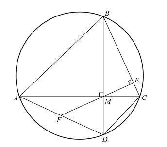

阿耶波多的著作在公元820年前后被翻译成阿拉伯文，影响深远。比如，阿拉伯数学家阿布·比鲁尼（Abu Al-Biruni，公元973—公元1048）就说，《阿耶波多历书》是“普通石头和高贵水晶的混合”。
1975年4月，印度第一颗人造卫星上天，卫星的名字就叫阿耶波多。
阿耶波多去世不久，印度次大陆又出现了一位伟大的数学家，他的名字叫婆罗摩笈多（Brahmagupta， 约公元598—约公元665）。婆罗摩笈多出生于印度七大宗教圣城之一的乌贾因，并在这里长大成人。
婆罗摩笈多是幸运的，他一生从未离开自己的家乡，并且有个稳定的职位——乌贾因天文台的台长。他的幸运让数学的发展也沾了光，因为他在七十年的人生里，一共写了四本关于数学和天文学的著作。其中《婆罗摩历算书》最为有名。
《婆罗摩历算书》至少有四章讲的是纯数学，内容涉及几何、代数和系列演算。他第一次把代数直接运用到天文学上，是第一位明确提出关于0的计算规则的数学家，尽管他以为0/0=0。他给出求解二次丢番图方程的方法，提供了计算从边长求圆内接四边形面积的公式。这个公式现在称为婆罗摩笈多公式。如果把四边形的一条边长设为零，它就成为由边长计算三角形面积的公式。他还给出一元线性方程和一元二次方程的通解。还推导出一个对数论有很大推进作用的恒等式：
(a2+b2)(c2+d2)=(ac-bd)2+(ad+bc)2=(ac+bd)2+(ad-bc)2（10）
这个恒等式说明，如果有两个数都能表示为两个平方数的和，则这两个数的积也可以表示为两个平方数的和。它在数论里有很多应用，例如“费马平方和定理”说，任何被4除余1的素数都能被表示为两个平方数的和；那么根据上面的等式，任何两个被4除余1的素数的积也都能表示为两个平方数的和。
除此之外，婆罗摩笈多还给出了负数的运算规则。这些规则与今天的规则非常接近。
婆罗摩笈多在《婆罗摩历算书》第十八章中这样提到加减法：
正数加正数为正数，负数加负数为负数。正数加负数为它们彼此的差，如果它们相等，结果就是零。负数加零为负数，正数加零为正数，零加零为零。负数减零为负数，正数减零为正数，零减零为零，正数减负数为它们彼此的和。
乘法：
正负得负，负负得正，正正得正，正数乘零﹑负数乘零和零乘零都是零。
至于除法，他是这样说的：
正数除正数或负数除负数为正数，正数除负数或负数除正数为负数，零除零为零。正数或负数除零有零作为该数的除数，零除正数或负数有正数或负数作为该数的除数。正数或负数的平方为正数，零的平方为零。
婆罗摩笈多认为非零之数除以零结果为零，这是不正确的。在现代数学中这个运算没有确定的解。
和阿耶波多著作的方式类似，婆罗摩笈多在著作中把文字编排成椭圆形的句子，并在最后写一首环状排列的诗。然而，他所有的数学结果都没有给出证明，我们也无法得知他的推导过程。
没有诗人的灵魂，不可能成为数学家。
索菲亚·科瓦列夫斯卡娅（Sofia Kovalevskaya， 公元1850—公元1891，俄国女数学家）
你来试试看？本章趣味数学题：
1.证明等式（10）。
2.证明婆罗摩笈多定理：若圆内接四边形的对角线相互垂直，则垂直于一边且过对角线交点的直线（EF）将平分对边，也就是说使AF=FD。
